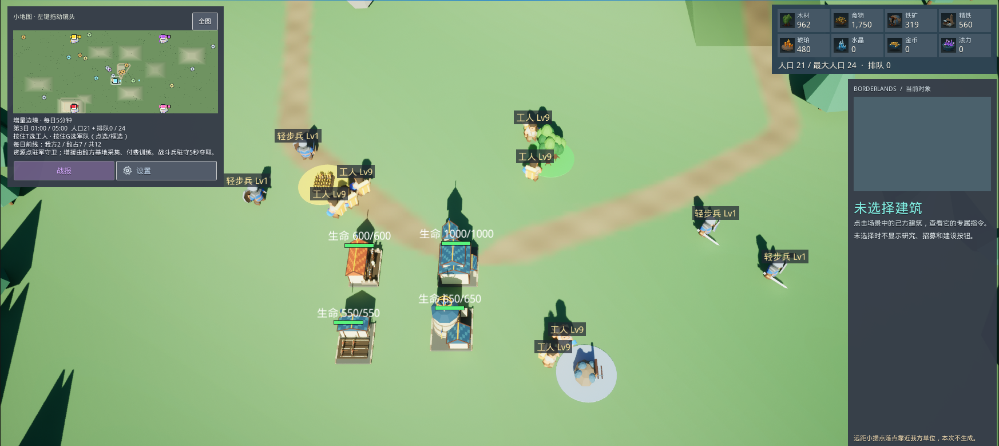
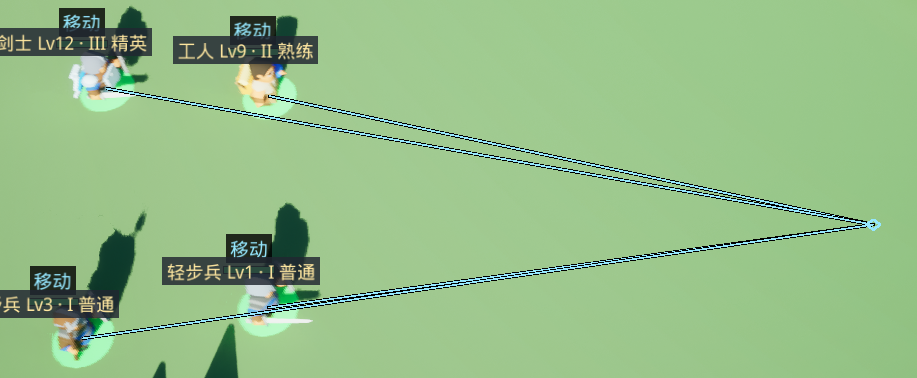
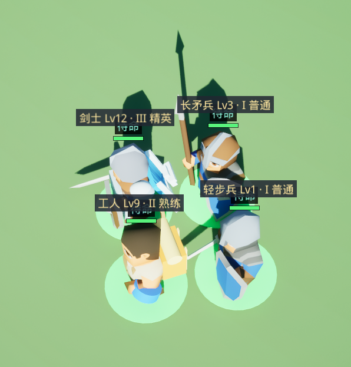

01
完整演示 · 14 分 37 秒 · 原声 ↗
基地与周边资源点，包含资源、人口、小地图和建筑操作界面。
混编单位向同一目标移动
到达目标后的站位
边境战役
UE 5.8 · C++ · 即时战略游戏


《边境战役》是一款使用 UE5 和 C++ 开发的即时战略游戏，包含建造、资源采集、单位生产、编队移动、战斗和存档等功能。
移动部分在 NavMesh 导航的基础上增加了编队站位和让路处理。下达移动指令后，根据目标位置、单位数量和体型生成矩形阵位，混编队伍按兵种分排。单位进入目标区域后再领取站位，减少多个单位争抢同一位置的情况。




战役部分负责回合推进和资源管理，存档记录部队、建筑和进度。移动、战斗、采集等功能分别放在对应模块中，方便单独调整和测试。